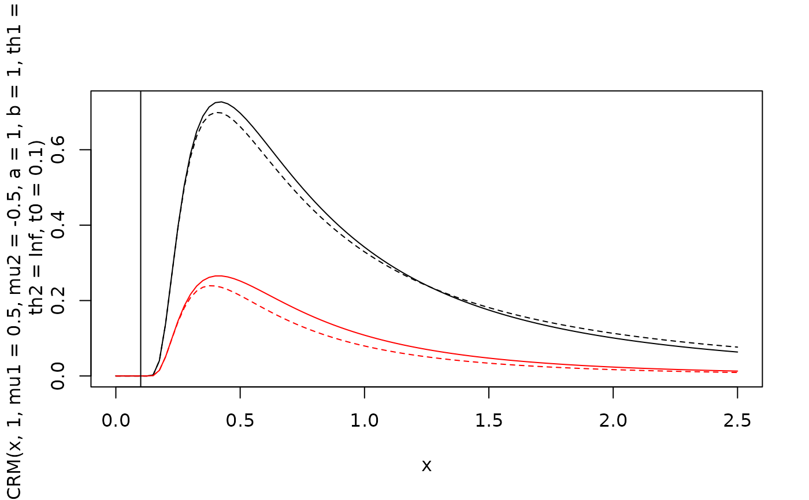
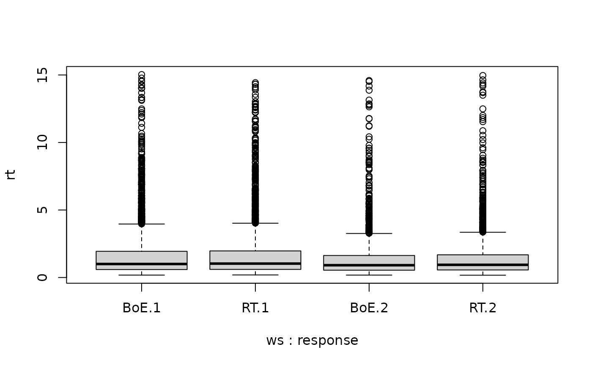
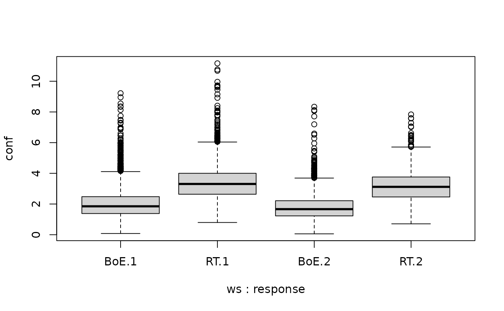
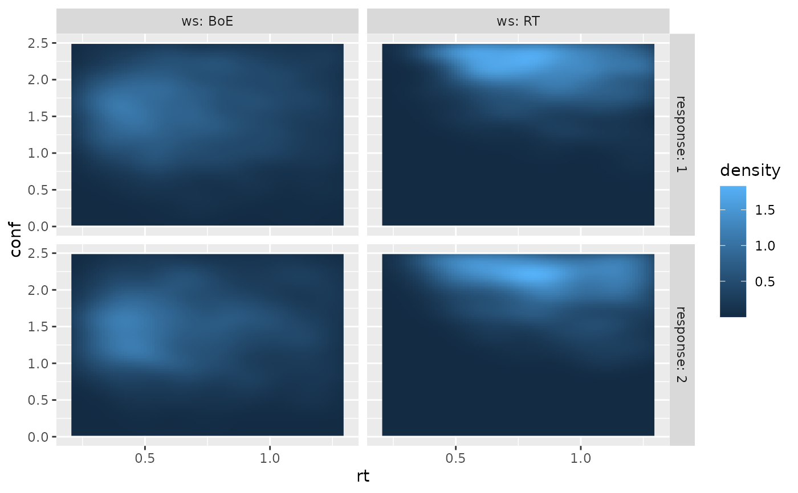

Independent and partially anti-correlated Race Model for Decision Confidence
Source:R/RaceModels.R
RaceModels.RdProbability densities and random number generators for response times,
decisions and confidence judgments in the independent Race Model
(dIRM/rIRM) or partially (anti-)correlated Race Model (dPCRM/rPCRM),
i.e. the probability of a given response (response: winning accumulator
(1 or 2)) at a given time (rt) and the confidence measure in the interval
between th1 and th2 (Hellmann et al., 2023). The definition of the
confidence measure depends on the argument time_scaled (see Details).
The computations are based on Moreno-Bote (2010).
The parameters for the models are mu1 and mu2 for the drift
rates, a, b for the upper thresholds of the two accumulators
and s for the incremental standard deviation of the processes and
t0 and st0 for the minimum and range of uniformly distributed
non-decision times (including encoding and motor time).
For the computation of confidence judgments, the parameters th1 and
th2 for the lower and upper bound of the interval for confidence
measure and if time_scaled is TRUE the weight parameters wx, wrt,
wint for the computation of the confidence measure are required (see Details).
Usage
dIRM(rt, response = 1, mu1, mu2, a, b, th1, th2, wx = 1, wrt = 0,
wint = 0, t0 = 0, st0 = 0, s1 = 1, s2 = 1, s = NULL,
time_scaled = TRUE, precision = 6, step_width = NULL)
dIRM2(rt, response = 1, mu1, mu2, a, b, th1, th2, wx = 1, wrt = 0,
wint = 0, t0 = 0, st0 = 0, s1 = 1, s2 = 1, smu1 = 0, smu2 = 0,
sza = 0, szb = 0, s = NULL, time_scaled = TRUE, precision = 6,
step_width = NULL)
dPCRM(rt, response = 1, mu1, mu2, a, b, th1, th2, wx = 1, wrt = 0,
wint = 0, t0 = 0, st0 = 0, s1 = 1, s2 = 1, s = NULL,
time_scaled = TRUE, precision = 6, step_width = NULL)
rIRM(n, mu1, mu2, a, b, wx = 1, wrt = 0, wint = 0, t0 = 0, st0 = 0,
s1 = 1, s2 = 1, s = NULL, smu1 = 0, smu2 = 0, sza = 0, szb = 0,
time_scaled = TRUE, delta = 0.01, maxrt = 15)
rPCRM(n, mu1, mu2, a, b, wx = 1, wrt = 0, wint = 0, t0 = 0, st0 = 0,
s1 = 1, s2 = 1, s = NULL, smu1 = 0, smu2 = 0, sza = 0, szb = 0,
time_scaled = TRUE, delta = 0.01, maxrt = 15)Arguments
- rt
a numeric vector of RTs. For convenience also a
data.framewith columnsrtandresponseis possible.- response
numeric vector with values in
c(1, 2), giving the accumulator that hit its boundary first.- mu1
numeric. Drift rate for the first accumulator
- mu2
numeric. Drift rate for the second accumulator
- a
positive numeric. Distance from starting point to boundary of the first accumulator.
- b
positive numeric. Distance from starting point to boundary of the second accumulator.
- th1
numeric. Lower bound of interval range for the confidence measure.
- th2
numeric. Upper bound of interval range for the confidence measure.
- wx
numeric. Weight on losing accumulator for the computation of the confidence measure. (Used only if
time_scale=TRUE, 1)- wrt
numeric. Weight on reaction time for the computation of the confidence measure. (Used only if
time_scale=TRUE, Default 0)- wint
numeric. Weight on the interaction of losing accumulator and reaction time for the computation of the confidence measure. (Used only if
time_scale=TRUE, Default 0)- t0
numeric. Lower bound of non-decision time component in observable response times. Range:
t0>=0. Default: 0.- st0
numeric. Range of a uniform distribution for non-decision time. Range:
st0>=0. Default: 0.- s1
numeric. Diffusion constant of the first accumulator. Usually fixed to 1 for most purposes as it scales other parameters (see Details). Range:
s1>0, Default: 1.- s2
numeric. Diffusion constant of the second accumulator. Usually fixed to 1 for most purposes as it scales other parameters (see Details). Range:
s2>0, Default: 1.- s
numeric. Alternative way to specify diffusion constants, if both are assumed to be equal. If both (
s1,s2ands) are given, onlys1ands2will be used.- time_scaled
logical. Whether the confidence measure should be time-dependent. See Details.
- precision
numerical scalar value. Precision of calculation. Determines the step size of integration w.r.t.
t0. Represents the number of decimals precisely computet on average. Default is 6.- step_width
numeric. Alternative way to define the precision of integration w.r.t.
t0by directly providing the step size for the integration.- smu1
numeric. Between-trial variability in the drift rate of the first accumulator.
- smu2
numeric. Between-trial variability in the drift rate of the second accumulator.
- sza
numeric. Between-trial variability in starting point of the first accumulator.
- szb
numeric. Between-trial variability in starting point of the second accumulator.
- n
integer. The number of samples generated.
- delta
numeric. Discretization step size for simulations in the stochastic process
- maxrt
numeric. Maximum decision time returned. If the simulation of the stochastic process exceeds a decision time of
maxrt, theresponsewill be set to 0 and themaxrtwill be returned asrt.
Value
dIRM and dPCRM return the numerical value of the probability density in a numerical vector of the same
length as rt.
rIRM and dPCRM return a data.frame with four columns and n rows. Column names are rt (response
time), response (1 or 2, indicating which accumulator hit its boundary first),
xl (the final state of the loosing accumulator), and conf (the
value of the confidence measure; not discretized!).
The race parameters (as well as response, th1,
and th2) are recycled to the length of the result (either rt or n).
In other words, the functions are completely vectorized for all parameters
and even the response.
Details
The parameters are formulated, s.t. both accumulators start at 0 and trigger a decision at their
positive boundary a and b respectively. That means, both parameters have to be positive.
Internally the computations adapt the parametrization of Moreno-Bote (2010).
time_scaled determines whether the confidence measure is computed in accordance to the
Balance of Evidence hypothesis (if time_scaled=FALSE), i.e. if response is 1 at time T and
\(X_2\) is the second accumulator, then
$$conf = b - X_2(T)$$.
Otherwise, if time_scaled=TRUE (default), confidence is computed as linear combination of
Balance of Evidence, decision time, and an interaction term, i.e.
$$conf = wx (b-X_2 (T)) + wrt\frac{1}{\sqrt{T}} + wint\frac{b-X_2(T)}{\sqrt{T}}.$$
Usually the weights (wx, wrt, wint) should sum to 1, as the confidence thresholds
(th1 and th2) may be scaled according to their sum. If this is not the case, they will be scaled
accordingly internally! Usually, this formula results in lower confidence when the reaction time is
longer but the state of the second accumulator is held constant. It is based on the optimal decision
confidence in Moreno-Bote (2010).
For convenience, the likelihood function allows that the first argument is a data.frame containing the
information of the first and second argument in the columns
(i.e., rt and response). Other columns (as well as passing
response separately as argument) will be ignored.
The simulations are done by simulating normal variables in discretized steps until one process reaches the boundary. If no boundary is met within the maximum time, response is set to 0.
Note
Similarly to the drift diffusion models (like ddiffusion and
ddynaViTE), s1 and s2 are scaling factors (s1 scales: mu1 and a,
s2 scales: mu2 and b, and depending on response: if response=2, s1 scales
th1,th2,and wrt), otherwise s2 is the scaling factor. It is sometimes
assumed (Moreno-Bote, 2010), that both noise terms are equal, then they should definitely be
fixed for fitting.
References
Hellmann, S., Zehetleitner, M., & Rausch, M. (2023). Simultaneous modeling of choice, confidence and response time in visual perception. Psychological Review 2023 Mar 13. doi: 10.1037/rev0000411. Epub ahead of print. PMID: 36913292.
Moreno-Bote, R. (2010). Decision confidence and uncertainty in diffusion models with partially correlated neuronal integrators. Neural Computation, 22(7), 1786–1811. doi:10.1162/neco.2010.12-08-930
Examples
# Plot rt distribution ignoring confidence
curve(dPCRM(x, 1, mu1=0.5, mu2=-0.5, a=1, b=1, th1=-Inf, th2=Inf, t0=0.1), xlim=c(0,2.5))
curve(dPCRM(x, 2, mu1=0.5, mu2=-0.5, a=1, b=1, th1=-Inf, th2=Inf, t0=0.1), col="red", add=TRUE)
curve(dIRM(x, 1, mu1=0.5, mu2=-0.5, a=1, b=1, th1=-Inf, th2=Inf, t0=0.1), lty=2,add=TRUE)
curve(dIRM(x, 2, mu1=0.5, mu2=-0.5, a=1, b=1, th1=-Inf, th2=Inf, t0=0.1),
col="red", lty=2, add=TRUE)
# t0 indicates minimal response time possible
abline(v=0.1)

## Following example may be equivalently used for the IRM model functions.
# Generate a random sample
df1 <- rPCRM(5000, mu1=0.2, mu2=-0.2, a=1, b=1, t0=0.1,
wx = 1) # Balance of Evidence
# Same RT and response distribution but different confidence distribution
df2 <- rPCRM(5000, mu1=0.2, mu2=-0.2, a=1, b=1, t0=0.1,
wint = 0.2, wrt=0.8)
head(df1)
#> rt response xl conf
#> 1 0.47 2 -0.64427191 1.644272
#> 2 1.53 2 -2.60026829 3.600268
#> 3 0.98 2 -0.04249862 1.042499
#> 4 2.83 1 -1.48200833 2.482008
#> 5 0.99 2 -1.09062305 2.090623
#> 6 0.73 1 -1.28525258 2.285253
# Compute density with rt and response as separate arguments
dPCRM(seq(0, 2, by =0.4), response= 2, mu1=0.2, mu2=-0.2, a=1, b=1, th1=0.5,
th2=2, wx = 0.3, wint=0.4, wrt=0.1, t0=0.1)
#> [1] 0.00000000 0.26919023 0.20371811 0.10962250 0.06320931 0.03928042
# Compute density with rt and response in data.frame argument
df1 <- subset(df1, response !=0) # drop trials where no accumulation hit its boundary
dPCRM(df1[1:5,], mu1=0.2, mu2=-0.2, a=1, b=1, th1=0, th2=Inf, t0=0.1)
#> [1] 0.36544683 0.07956939 0.17481581 0.04082114 0.17208904
# s1 and s2 scale other decision relevant parameters
s <- 2 # common (equal) standard deviation
dPCRM(df1[1:5,], mu1=0.2*s, mu2=-0.2*s, a=1*s, b=1*s, th1=0, th2=Inf, t0=0.1, s1=s, s2=s)
#> [1] 0.36544683 0.07956939 0.17481581 0.04082114 0.17208904
s1 <- 2 # different standard deviations
s2 <- 1.5
dPCRM(df1[1:5,], mu1=0.2*s1, mu2=-0.2*s2, a=1*s1, b=1*s2, th1=0, th2=Inf, t0=0.1, s1=s1, s2=s2)
#> [1] 0.36544683 0.07956939 0.17481581 0.04082114 0.17208904
# s1 and s2 scale also confidence parameters
df1[1:5,]$response <- 2 # set response to 2
# for confidence it is important to scale confidence parameters with
# the right variation parameter (the one of the loosing accumulator)
dPCRM(df1[1:5,], mu1=0.2, mu2=-0.2, a=1, b=1,
th1=0.5, th2=2, wx = 0.3, wint=0.4, wrt=0.1, t0=0.1)
#> [1] 0.29040526 0.06920033 0.15343987 0.01744648 0.15105199
dPCRM(df1[1:5,], mu1=0.2*s1, mu2=-0.2*s2, a=1*s1, b=1*s2,
th1=0.5, th2=2, wx = 0.3/s1, wint = 0.4/s1, wrt = 0.1, t0=0.1, s1=s1, s2=s2)
#> [1] 0.29040526 0.06920033 0.15343987 0.01744648 0.15105199
dPCRM(df1[1:5,], mu1=0.2*s1, mu2=-0.2*s2, a=1*s1, b=1*s2,
th1=0.5*s1, th2=2*s1, wx = 0.3, wint = 0.4, wrt = 0.1*s1, t0=0.1, s1=s1, s2=s2)
#> [1] 0.29040526 0.06920033 0.15343987 0.01744648 0.15105199
two_samples <- rbind(cbind(df1, ws="BoE"),
cbind(df2, ws="RT"))
# drop not finished decision processes
two_samples <- two_samples[two_samples$response!=0,]
# no difference in RT distributions
boxplot(rt~ws+response, data=two_samples)

# but different confidence distributions
boxplot(conf~ws+response, data=two_samples)
if (requireNamespace("ggplot2", quietly = TRUE)) {
require(ggplot2)
ggplot(two_samples, aes(x=rt, y=conf))+
stat_density_2d(aes(fill = after_stat(density)),
geom = "raster", contour = FALSE, h=c(0.3, 0.7)) +
xlim(c(0.2, 1.3))+ ylim(c(0, 2.5))+
facet_grid(cols=vars(ws), rows=vars(response), labeller = "label_both")
}
#> Loading required package: ggplot2

#> Warning: Removed 6406 rows containing non-finite outside the scale range
#> (`stat_density2d()`).
#> Warning: Removed 1584 rows containing missing values or values outside the scale range
#> (`geom_raster()`).

# Restricting to specific confidence region
df1 <- df1[df1$conf >0 & df1$conf <1,]
dPCRM(df1[1:5,], th1=0, th2=1,mu1=0.2, mu2=-0.2, a=1, b=1, t0=0.1,wx = 1 )
#> [1] 0.035673127 0.038684577 0.028179101 0.033133736 0.001450075